简约的形体，
可感知的科技。
原研究关注小鹏的简约科技风格、X-EEA 电子电气架构与 XNGP 智能体验。将线性结构、材质拼接与蓝色光感转化为周边产品的视觉语言。
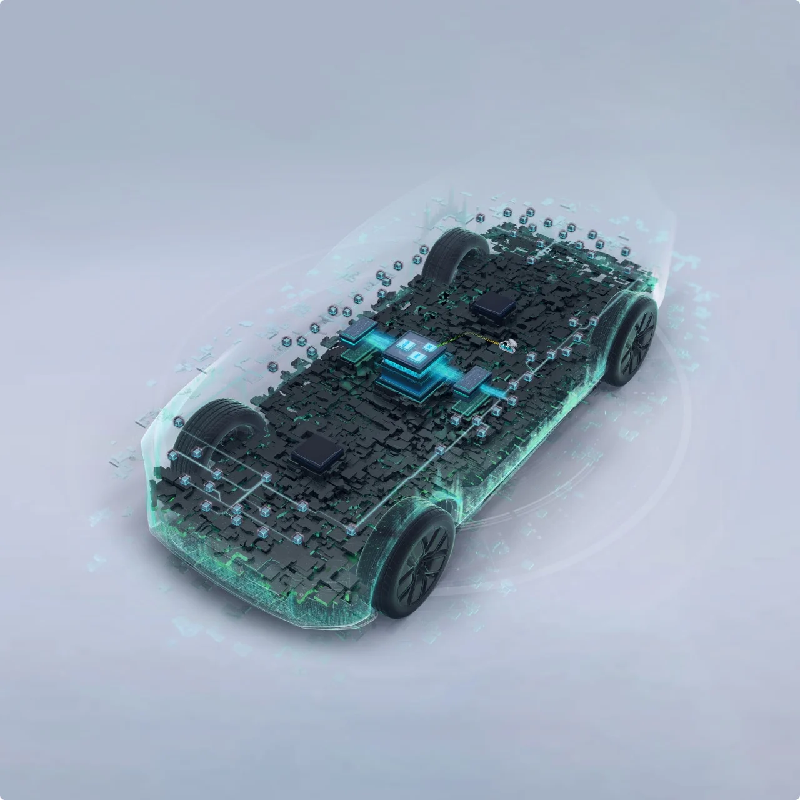
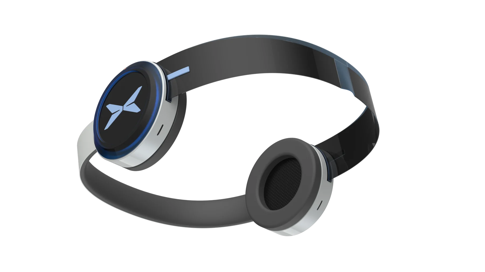
围绕小鹏 eVTOL 的未来出行情境，将护目、声音与导航整合进一件头戴设备。可拆卸耳机与眼镜相互连接，让出行信息与日常音乐在同一套产品中延续。
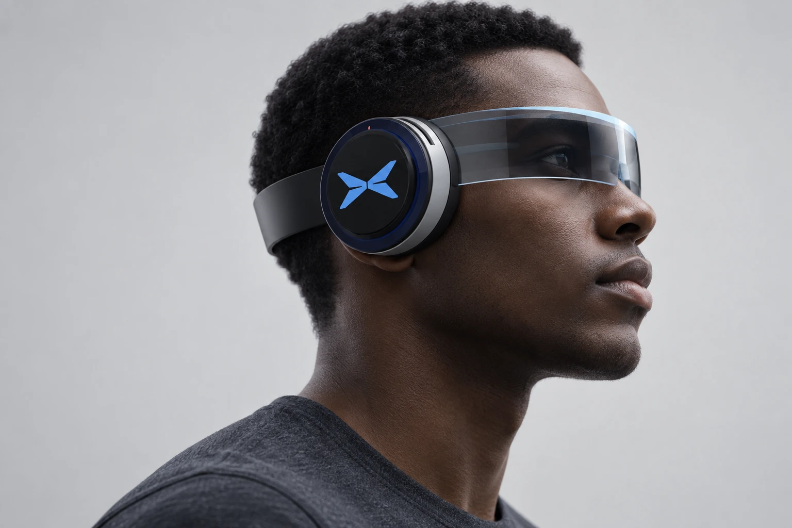
从品牌语言、用户特征到陆空出行情境，逐步收敛设计方向。以下为原项目研究的整理，研究过程与素材在下方分章节展开。
原研究关注小鹏的简约科技风格、X-EEA 电子电气架构与 XNGP 智能体验。将线性结构、材质拼接与蓝色光感转化为周边产品的视觉语言。

原项目聚焦追求智能体验、具有增换购需求的中产家庭用户；画像强调科技兴趣、实用性与低调简约的审美。
增换购用户
原稿引用的小鹏 2024.06.14 用户报告
此处保留项目当时引用的资料，不视为本项目独立问卷或当前市场统计。
导航提示与声音配合，减少在多种设备之间切换。
关注鼻部受力、发型适配与收纳，将人因问题带入草图推演。
眼镜与耳机既可以联动，也能拆下耳机用于音乐和通话。
依据原稿中的 X9 用户报告与目标画像，梳理消费习惯、家庭特征与科技偏好，再转化为头戴设备的设计方向。
已有用车经验，更关注体验升级。
兼顾个人兴趣与家庭出行。
实用、舒适与便利同样重要。
原稿对比的传统 MPV 数据约为 5%。
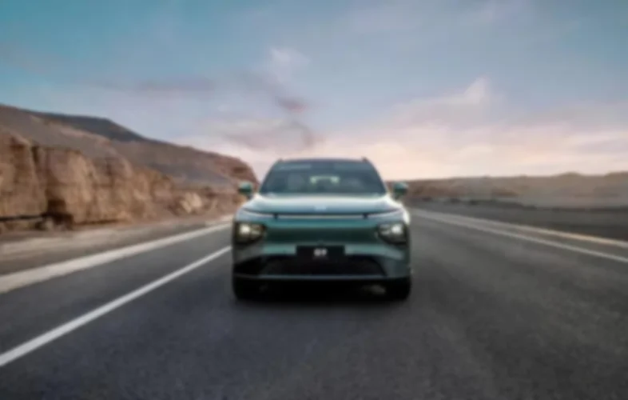
技术兴趣 · 理性消费 · 简约审美
将视觉提示与声音结合，减少在不同设备之间切换。
围绕鼻部受力、发型适配与后脑支撑推演结构。
可拆卸耳机支持独立听音与通话，让使用场景更灵活。
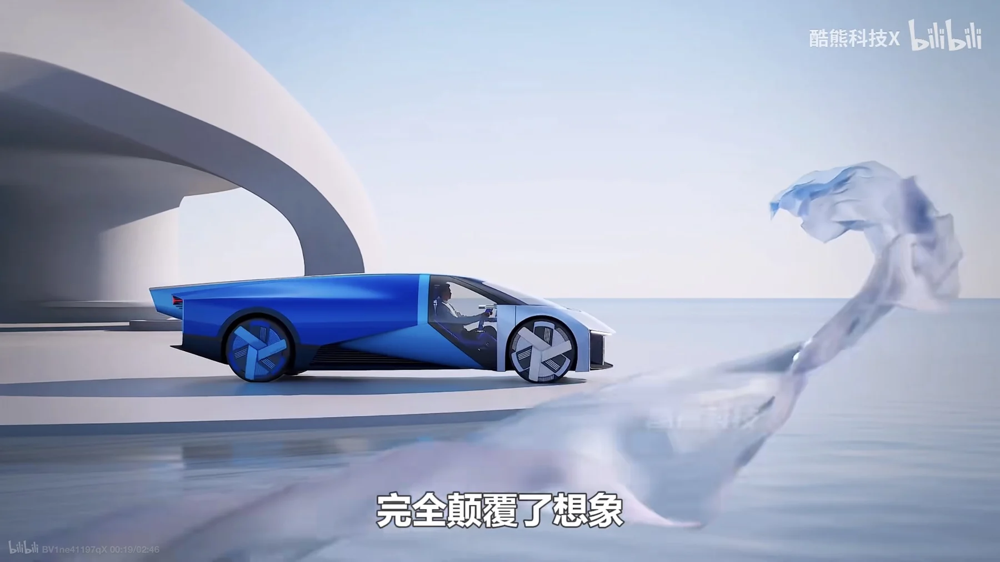
研究陆空一体飞行汽车的功能、形态与座舱体验，再对航空、NASA、大疆等周边案例进行比较，探索科技品牌如何通过日常物品建立认知。
继续阅读情境与竞品研究 ↗护目镜、头盔与护目镜、手指陀螺、行车记录仪。最终选择头戴设备，将护目、音乐与导航整合，保留模块拆分的灵活性。
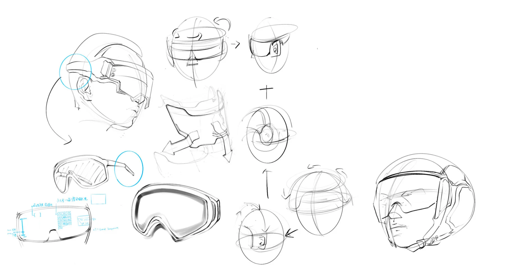
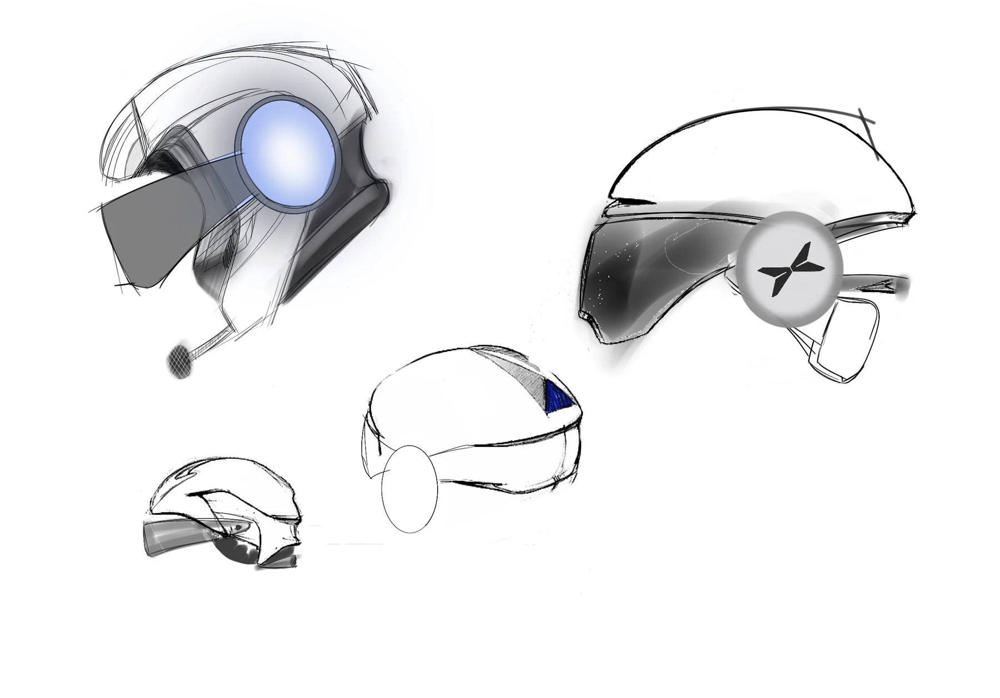
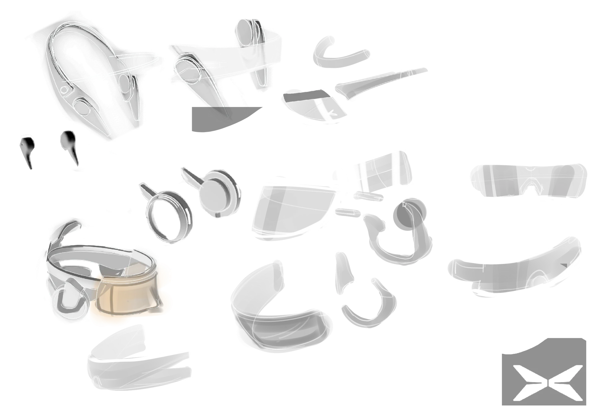
黑色环带、蓝色标志、圆形耳罩与连续弧面护目镜。下方均为第 42–43 页的原始产品渲染，可切换查看不同结构与角度。
 侧面 / P43
侧面 / P43出行与日常听音之间切换，保留原设计中的卡扣连接思路。
视觉导航和声音提示彼此配合，让目的地信息保持连续。
鼻托、后脑固定与材料选择共同回应舒适性和稳定性。
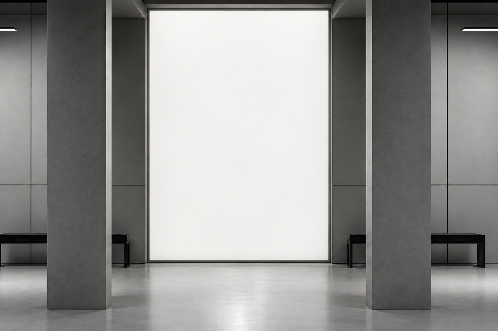
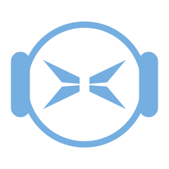
FutureVision视野与声音，在此连接。
XPENG eVTOL / WEARABLE CONCEPT
刘润佳 / Zoe Liu
Product & Experience Design
视野与声音，随行。
体验 App ↗延续原稿的冰蓝色、半透明信息层、导航路径与音乐面板。横向护目镜界面与手机端相互呼应，呈现设备连接、导航、音乐与佩戴设置。
连接设备后，选择目的地开始导航；切换音乐、调整音量，或改变护目镜亮度。每个操作都有可见的反馈。
打开 App 演示 ↗交互概念原型 · 使用模拟状态，不连接真实设备。眼镜与耳机一体化设计，围绕佩戴舒适性、可拆卸结构与信息同步展开。
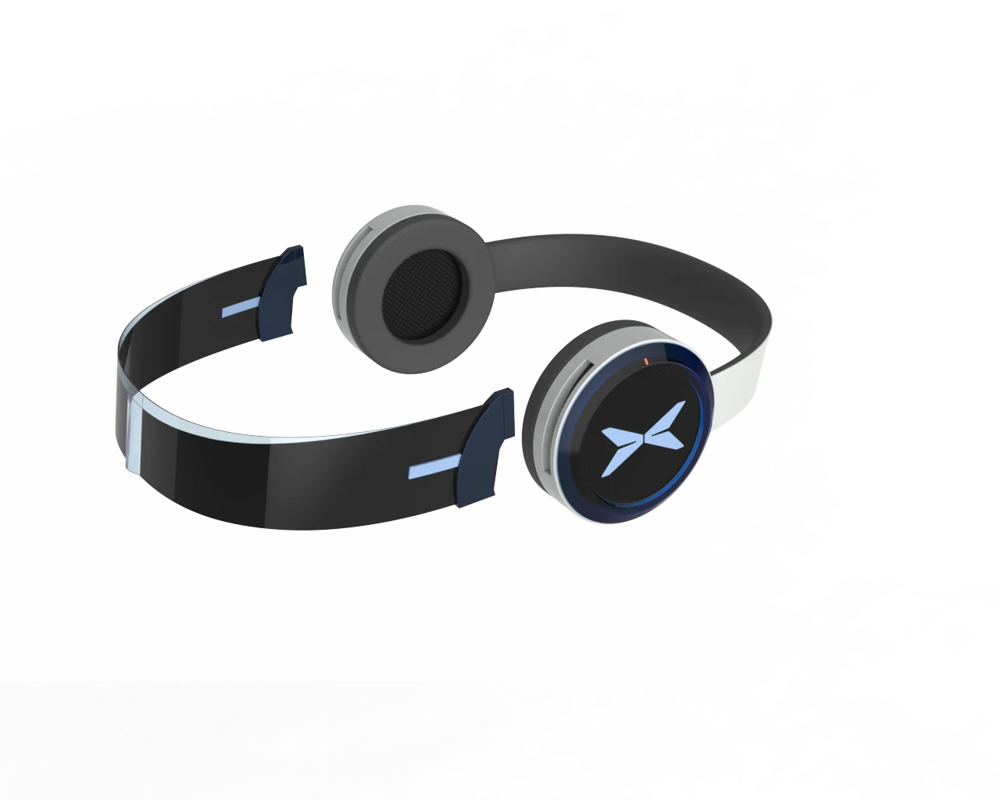
耳机部分可拆下，作为日常听音乐、接电话的设备。眼镜与耳机通过卡扣连接，内侧卡扣保持外观连贯；连接后联动呈现导航信息。
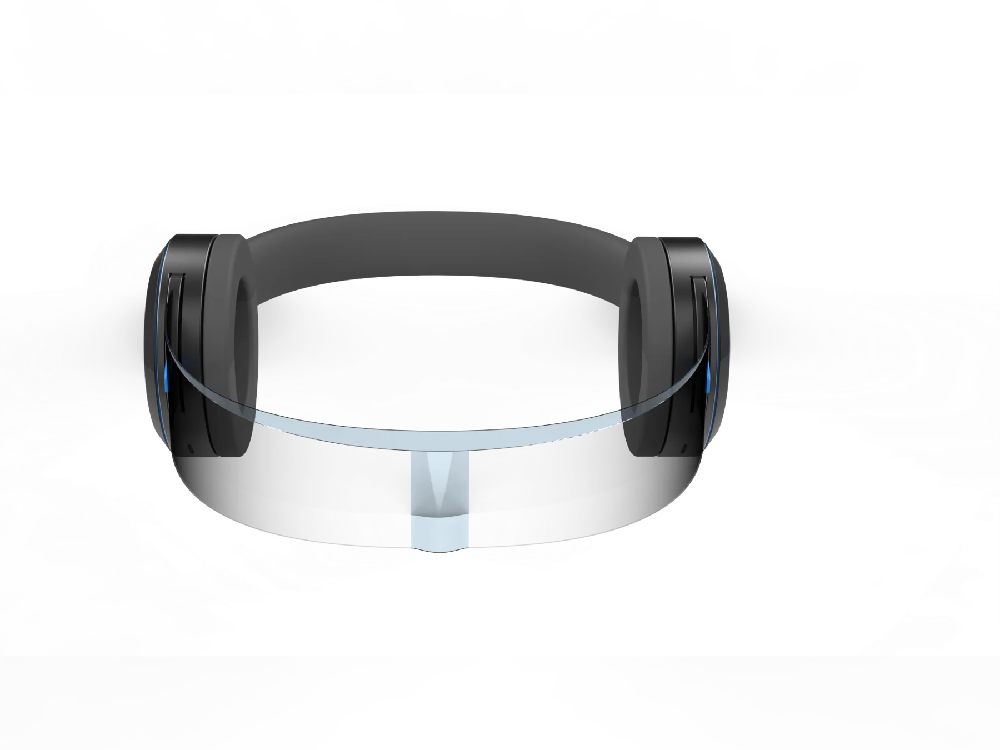
亲肤硅胶鼻托与后脑固定方式共同分担佩戴压力。眼镜与耳机的环形结构适应不同发型，也为座舱中的佩戴与收纳留出空间。
金属质感外壳、亲肤内衬与通透镜面形成层次，蓝色标志呼应小鹏的科技语言。
| 部位 | 材料 | 工艺 |
|---|---|---|
| 外壳 | 金属（铁） | 表面金属化 |
| 结构件 | PC / ABS | 注塑 |
| 接触面 | 亲肤蛋白皮质 | 包覆 |
| 镜片 | 柔性显示膜设想 | 贴膜 |
| 柔性部件 | 硅氧烷 | 模压 |
从品牌语言到佩戴体验，五组研究线索，
逐步收敛为 FutureVision。
从小鹏的车型与智能体验中，提取连贯曲线、清晰线条和克制的蓝色。让周边产品延续品牌气质，也拥有日常佩戴的轻盈感。
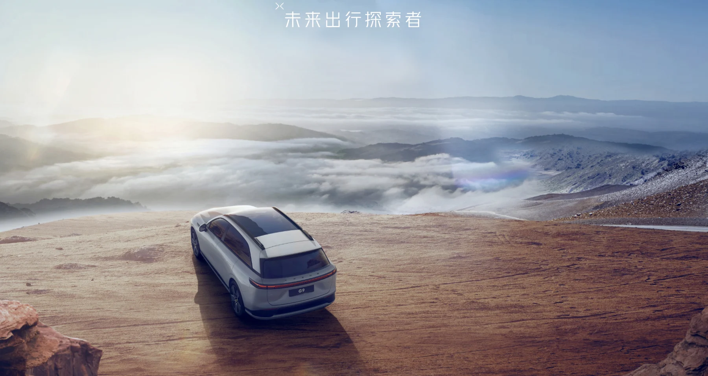
项目参考 X9 用户资料，将目标聚焦于重视智能体验、家庭出行与实用性的用户。
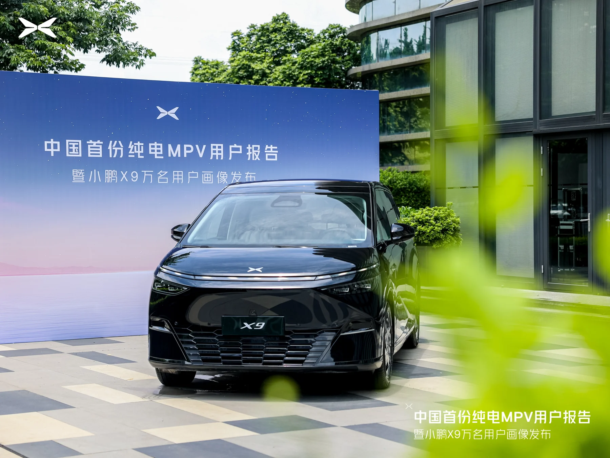
科技兴趣 · 简约审美 · 日常实用
原报告中，79% 为增换购用户。设计需要让新的交互方式容易理解。
让导航与声音协同呈现，减少多设备之间的切换。
眼镜与耳机可联动，耳机也可拆下，延续到音乐与通话场景。
重点信息分层呈现，保持视野清晰。
声音提示与视觉导航形成配合。
关注接触点、后脑支撑与收纳体积。
观察航空、NASA 与大疆的周边案例：从识别符号，到可以使用、可以互动的日常物件。
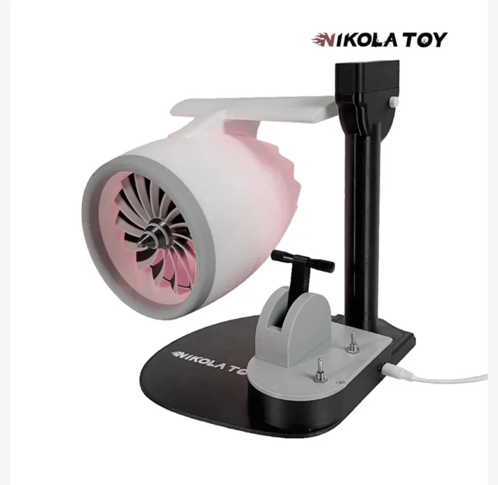
AVIATION涡扇等航空结构转化为日常物品，让品牌联想更直观。
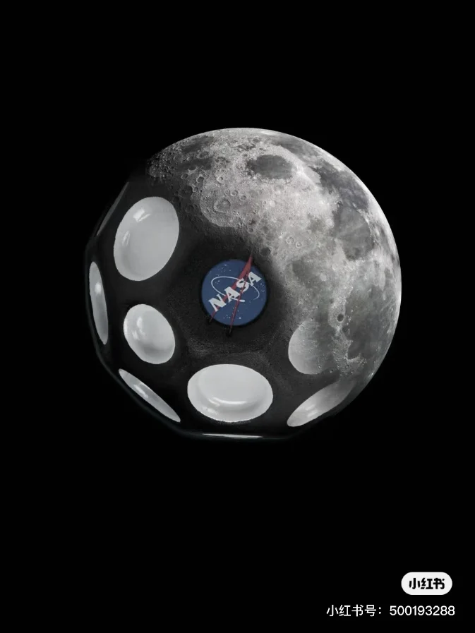
NASA以星球与航天主题建立趣味，让产品承载探索的想象。
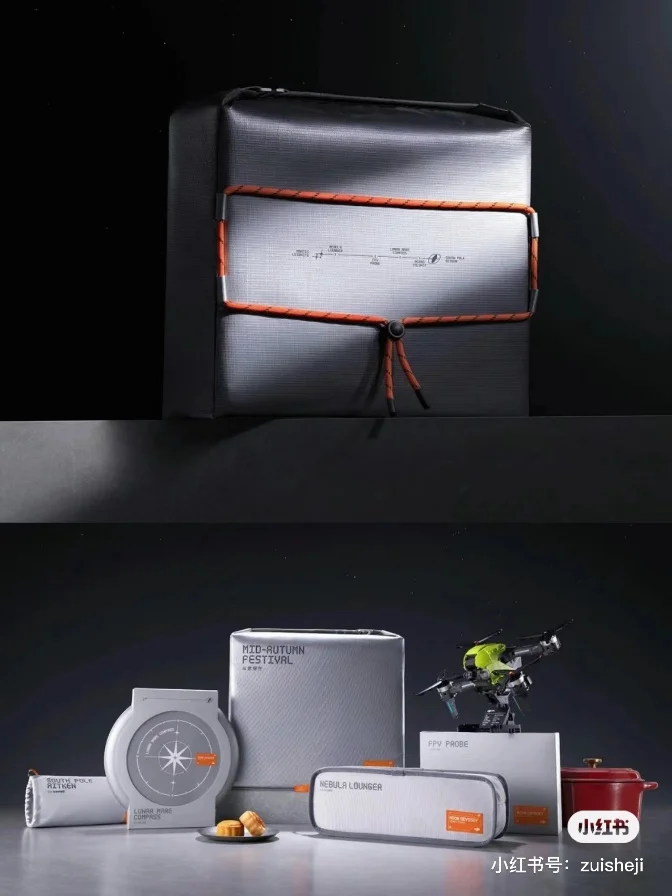
DJI工业质感与实用功能结合，把探索精神延续到日常。
鲜明的品牌识别，
加上真实可用的功能。
比较品牌关联、使用场景与交互潜力，最终将护目镜与耳机整合为一体。
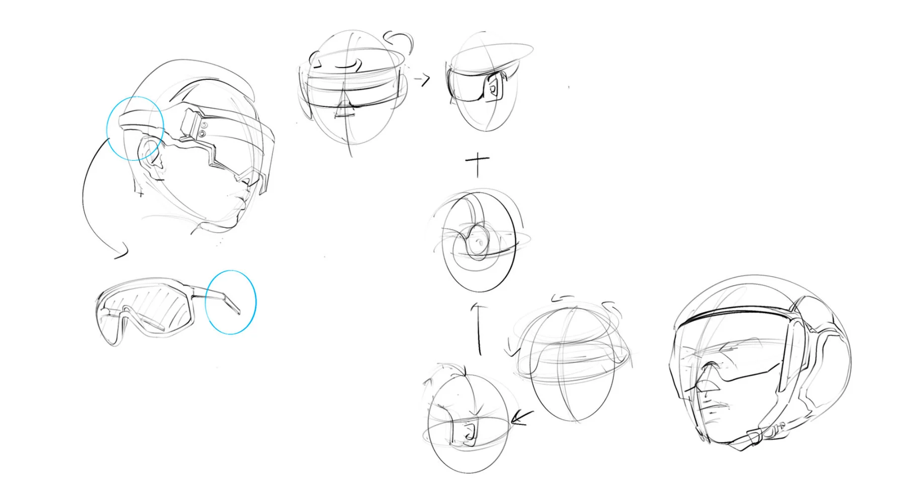
EXPLORATION / 01探索环形固定、视野与头部接触关系。
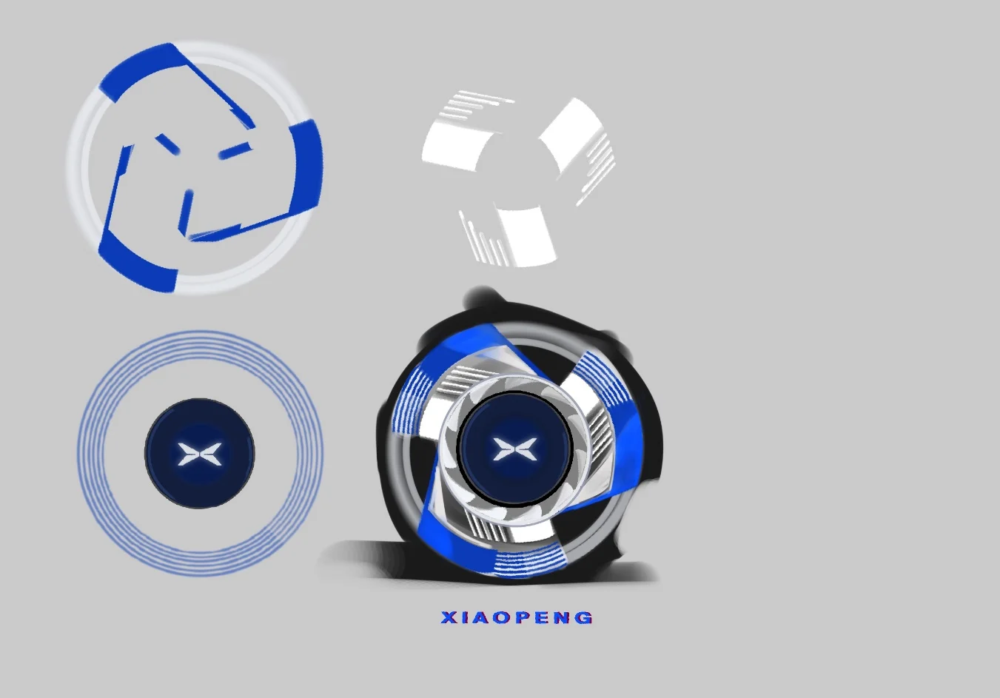
EXPLORATION / 02将轮毂与飞行结构转化为可玩的形态。
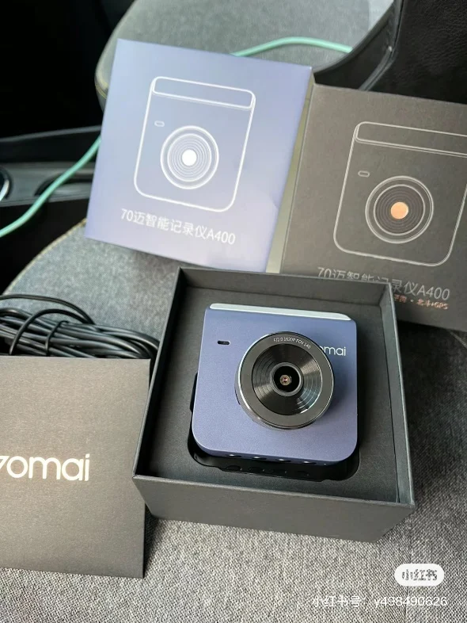
EXPLORATION / 03把车身语言延续到镜头与信息显示。
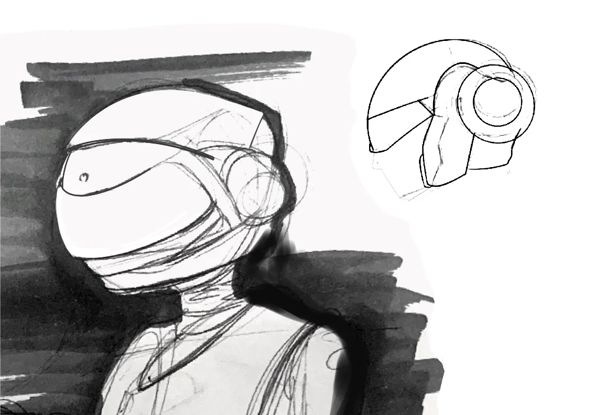